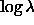

The spectro2d pipeline works in two stages. First, it reduces the data from each chip from each fifteen-minute exposure separately, and then it combines the results from each exposure.
After bias subtraction, each raw image is divided by a uniformly illuminated flat to take out pixel-to-pixel variations. The flat-field spectra (i.e., the flat-field observed through the fibers) are then traced on the CCD: for each fiber, the flat-field image centroid in column position is fit by a polynomial in row number. The flat-field spectra are optimally extracted, assuming a Gaussian profile for each one, simultaneously fitting a low-order polynomial to scattered light. These fits will also be used for the first-order object extraction of the science and arc frames, allowing for small offsets. The arc lamp spectra are extracted as well and centroids of the lines are measured, to which we fit a fifth-order Legendre polynomial.
The flat-field spectra
are then wavelength-calibrated, normalized, and combined to form a
``superflat'' for each spectrograph camera, by
stacking the 320 normalized flat-field spectra and performing an
iterative least-squares bspline fit with outlier rejection on this
 oversampled dataset to obtain an effectively continuous
function. For each fiber, the superflat is resampled at every pixel
and divided into the extracted flat-field spectrum to form the ``fiber
flat.'' In this way, flat-field variations between fibers are
removed, as are small-scale features in the wavelength dependence of
the system response.
oversampled dataset to obtain an effectively continuous
function. For each fiber, the superflat is resampled at every pixel
and divided into the extracted flat-field spectrum to form the ``fiber
flat.'' In this way, flat-field variations between fibers are
removed, as are small-scale features in the wavelength dependence of
the system response.
For the science exposures, the object and sky fibers are spatially
traced, with tweaking from the flat-field trace, and optimally
extracted. In the extraction, the Gaussian fiber profile fitting can
also be tweaked from the fiber-flat image. Scattered light is removed by
a fourth order Chebyshev polynomial
fit. Outlying pixels are rejected and masked. The extracted spectra
are then flat-fielded by
dividing by the fiber flats, and the wavelength solution is applied,
using a vacuum wavelength scale, adjusting slightly to match the known
positions of certain sky lines, and correcting to the heliocentric
frame. The wavelength calibration is accurate to of order 10
km s or better.
or better.
As with the flats, an oversampled ``supersky'' is constructed from the 32 sky fibers per plate. For each fiber, the supersky is resampled at every pixel in the object spectrum and subtracted.
Telluric absorption in four wavelength regions in the red spectra is removed using spectrophotometric and reddening standard stars: these are used to construct four ``superTelluric'' spectra using the bspline fitting procedure.
Next, spectro2d performs a spectrophotometric flux calibration
of the individual exposures: the counts in each exposure are placed on
the same scale, and the wavelength scale is rebinned to a simple
polynomial in log  .
.
If a smear exposure exists, the counts in each exposure are corrected to match a low-order fit to the smear counts; this corrects for light which falls outside the 3'' fiber aperture because of seeing, guiding errors, and atmospheric refraction. However, since the smear exposure procedure was implemented part way through commissioning, many of the plates included in the EDR do not have smear exposures (see Table 4).
Next, the spectra are flux-calibrated by matching the counts
in the mean of the high S/N spectra of the spectrophotometric and
reddening standards on the plate, and equating this to the synthetic
composite F8 subdwarf spectrum from Pickles (1998). This is placed on an
absolute scale by matching the synthesized  fiber magnitudes of
these stars to the SDSS photometry
fiber magnitudes of
these stars to the SDSS photometry .
This procedure removes the instrument response as a function of
wavelength in each spectrograph camera. The absolute accuracy of the
spectrophotometry is not well-measured at this point, but can probably
be trusted to 20% for point sources when smear exposures are
available. Note that for extended sources (galaxies), the smear
technique effectively corrects the spectrophotometry to a
.
This procedure removes the instrument response as a function of
wavelength in each spectrograph camera. The absolute accuracy of the
spectrophotometry is not well-measured at this point, but can probably
be trusted to 20% for point sources when smear exposures are
available. Note that for extended sources (galaxies), the smear
technique effectively corrects the spectrophotometry to a  aperture; in the presence of spectral gradients (e.g., nuclear
emission lines), the results may be difficult to interpret.
aperture; in the presence of spectral gradients (e.g., nuclear
emission lines), the results may be difficult to interpret.
Finally, for each object, the individual science frames, both red and
blue halves, are stacked and fit with the iterative bspline, with
inverse variance weighting. In the process, outliers due to cosmic
rays are rejected and masked, and errors in the fluxes estimated. The
combined, merged spectra are
resampled in constant velocity pixels (), with a pixel
scale of 69 km sec . If possible, exposures on multiple nights are
combined. If a plate is re-plugged, however, only the exposures with a
given plugging are combined.
. If possible, exposures on multiple nights are
combined. If a plate is re-plugged, however, only the exposures with a
given plugging are combined.
Mask bits are set for each pixel of the reduced spectra, as described in Table 13. Two masks are given for the final combined spectra, the bits in the OR mask set if the relevant flag was set in any of the individual exposures entering the combination, while the AND mask indicates that the flag was set in all of the exposures for that pixel. For most purposes, one should examine the OR mask to be safe. Pixels flagged FULLREJECT, NOSKY, NODATA, or BRIGHTSKY, or those with error set to identically zero are likely to be corrupted. Many of these are due to bad columns on the CCD's, or cross-talk from very bright objects in neighboring fibers (see the flag NEARWHOPPER).
On occasion, the spectra exhibit unphysical wiggles due to problems in the spectrophotometry, especially in the region of the dichroic split (Å); this will be improved in future releases.